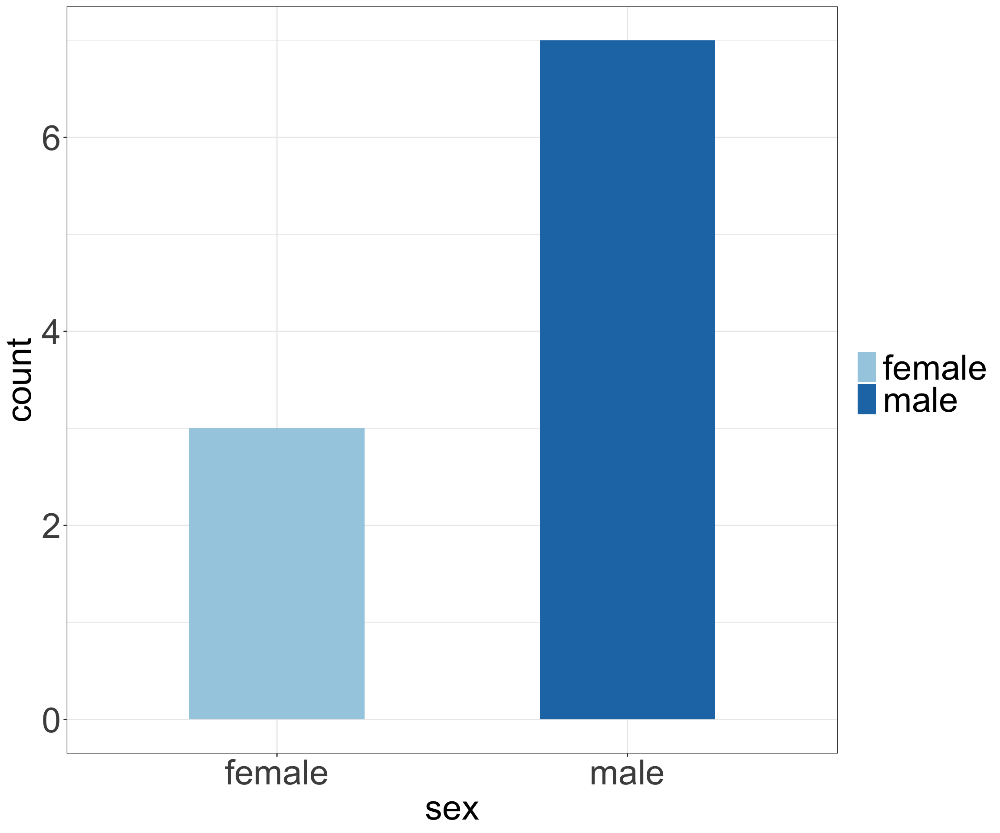
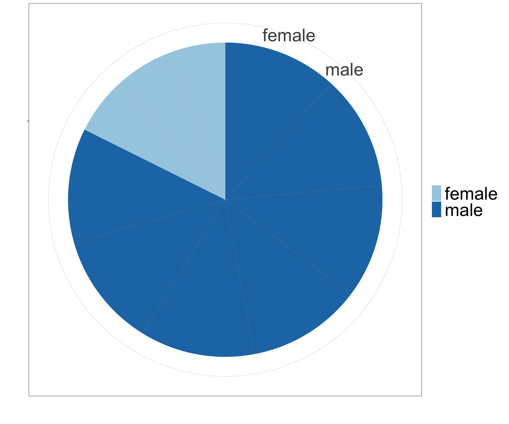
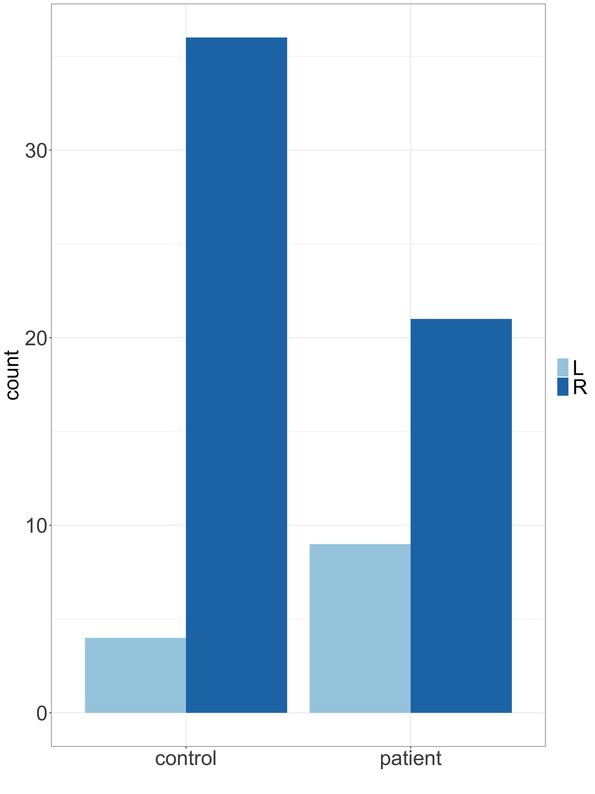
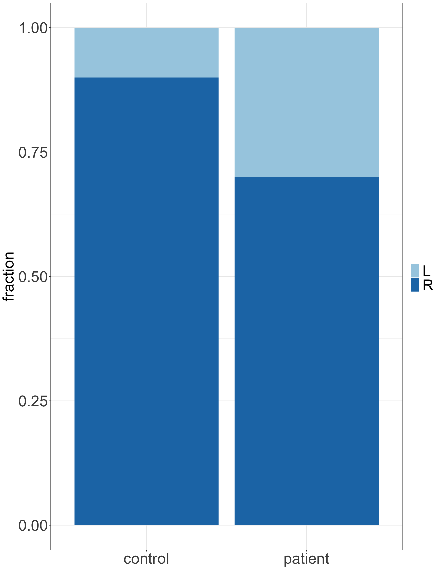
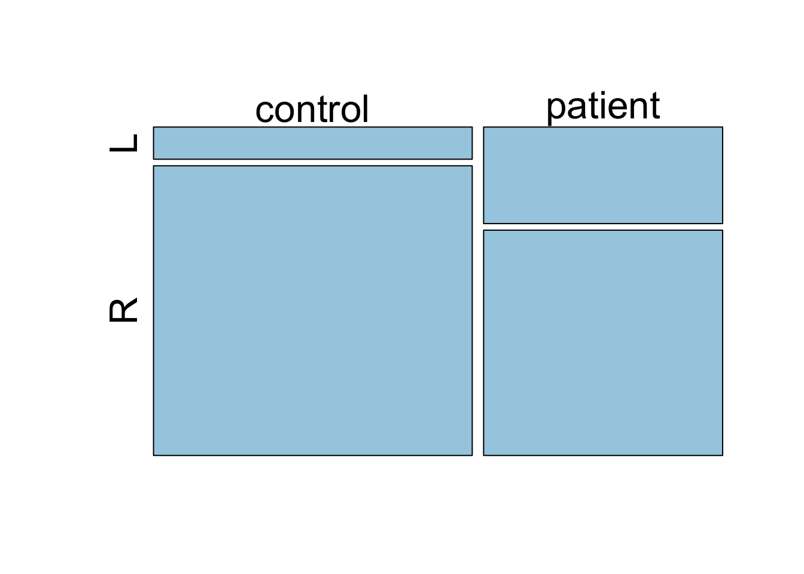

Code
# load libraries
library(tidyverse)
library(kableExtra)
library(ggplot2)# load libraries
library(tidyverse)
library(kableExtra)
library(ggplot2)Categorical data can be summarized by counting the number of observations of each category and summarizing in a frequency table or graphically in a bar chart. Alternatively we can calculate the the proportions (or percentages) of each category.
flowchart TD A(Categorical data) --> B(Numerical summary) B(Numerical summary) --> D(Table of frequencies
Proportions
Percentages
...) A(Categorical data) --> C(Graphical summary) C(Graphical summary) --> E(Bar charts
Pie chart
Mosaic plot
...)
Example 2.1 (Lab mice: sex)
Imagine, we run an experiment, in which follow 100 mice over a period of 24 weeks. To begin with, we record mice sex (male/female). In addition, every week we record the weight (g) of each mouse, starting at week 5. How can we summarize the sex (male/female) variable?
The data can be loaded from mice.csv and a preview is shown below.
# read in data
mice <- read_csv("data/mice.csv")
mice <- mice %>%
mutate(weight = round(weight,2))
# # preview data
# mice %>%
# datatable() %>%
# formatSignif(columns = c("weight"), digits = 4)
# preview data
head(mice) %>%
kable() %>%
kable_styling(full_width = FALSE)| id | sex | male | week | weight |
|---|---|---|---|---|
| 1 | male | 1 | 5 | 19.05 |
| 1 | male | 1 | 6 | 19.99 |
| 1 | male | 1 | 7 | 20.79 |
| 1 | male | 1 | 8 | 21.37 |
| 1 | male | 1 | 9 | 22.08 |
| 1 | male | 1 | 10 | 22.72 |
Let’s focus on only subset of data, the first 10 mice.
# select first 10 mice at week 5
mice.10 <- mice %>%
filter(week == 5) %>%
filter(id %in% 1:10)
# preview data
head(mice.10) %>%
kable() %>%
kable_styling(full_width = FALSE)| id | sex | male | week | weight |
|---|---|---|---|---|
| 1 | male | 1 | 5 | 19.05 |
| 2 | male | 1 | 5 | 20.67 |
| 3 | female | 0 | 5 | 18.18 |
| 4 | male | 1 | 5 | 20.33 |
| 5 | male | 1 | 5 | 21.02 |
| 6 | male | 1 | 5 | 16.88 |
Clearly, information about male/female falls under categorical data type. Things we can ask here to summarize the data are: how many mice of each category we have, i.e. how many males and how many females and what are the males/females percentages (or proportions). We can also visualize these descriptive statistics in a bar chart of a pie chart.
# count frequencies, percentages and proportions
table.summary <- mice.10 %>%
group_by(sex) %>%
tally() %>%
mutate("percent (%)" = n/sum(n)*100) %>%
mutate("proportion" = n/sum(n))
# show table
kable(table.summary) %>% kable_styling(full_width = TRUE)| sex | n | percent (%) | proportion |
|---|---|---|---|
| female | 3 | 30 | 0.3 |
| male | 7 | 70 | 0.7 |
To visualize the frequencies (or percentages or proportions) we can use bar charts referred to as barplots in R.
font.size <- 30
my.ggtheme <- theme(axis.title = element_text(size = font.size),
axis.text = element_text(size = font.size),
legend.text = element_text(size = font.size),
legend.title = element_blank())
# use ggplot to draw a bar chart
mice.10 %>%
ggplot(aes(x = sex, fill = sex)) +
geom_bar(width = 0.5) +
scale_fill_brewer(palette = "Paired") +
theme_bw() +
my.ggtheme
# draw pie chart
mice.10 %>%
ggplot(aes(x="", y = sex, fill = sex)) +
geom_bar(width = 1, stat = "identity") +
theme_bw() +
coord_polar("y", start=0) +
scale_fill_brewer(palette="Paired") +
xlab("") +
ylab("") +
my.ggtheme

Example 2.2 (Left-handedness)
We are interested in whether left-handedness is associated with suffering from migraine. We collect data on handedness in 30 patients suffering from migraine on regular basis and 40 healthy controls.
The preview of data:
# in fact we just generate some random data on handedness (L/H) and migrane (Yes/No)
set.seed(1123) # set random seed
patients <- sample(c("L", "R"), 30, prob=c(0.3, 0.7), replace=TRUE)
controls <- sample(c("L", "R"), 40, prob=c(0.1, 0.9), replace=TRUE)
data.handedness <- rbind(data.frame(group="patient", handedness=patients),
data.frame(group="control", handedness=controls)) %>%
rownames_to_column("id")
# preview data on handedness and migraine
glimpse(data.handedness)Rows: 70
Columns: 3
$ id <chr> "1", "2", "3", "4", "5", "6", "7", "8", "9", "10", "11", "1…
$ group <chr> "patient", "patient", "patient", "patient", "patient", "pat…
$ handedness <chr> "L", "L", "L", "R", "L", "R", "R", "L", "L", "R", "R", "R",…# preview first few observations
head(data.handedness) id group handedness
1 1 patient L
2 2 patient L
3 3 patient L
4 4 patient R
5 5 patient L
6 6 patient R# preview last few observations
tail(data.handedness) id group handedness
65 65 control R
66 66 control R
67 67 control R
68 68 control R
69 69 control R
70 70 control R# count number (and %) of left-handed by group (patients / controls)
data.handedness %>%
group_by(group) %>%
dplyr::summarize(Total=n(), `Left-handed` = sum(handedness=="L")) %>%
mutate(`Left handed (%)` = round(`Left-handed` * 100 / Total, 2)) %>%
kable() %>%
kable_styling(full_width = TRUE)| group | Total | Left-handed | Left handed (%) |
|---|---|---|---|
| control | 40 | 4 | 10 |
| patient | 30 | 9 | 30 |
Shows the multivariate frequency distribution of variables
# use table() function to create contingency table
table.con <- table(data.handedness$group, data.handedness$handedness)
table.con <- addmargins(table.con)
table.con %>% kable() %>%
kable_styling(full_width = TRUE)| L | R | Sum | |
|---|---|---|---|
| control | 4 | 36 | 40 |
| patient | 9 | 21 | 30 |
| Sum | 13 | 57 | 70 |
Again, we can visualize the frequencies using bar charts.
data.handedness %>%
ggplot(aes(x=group, fill=handedness)) +
geom_bar() +
theme_bw() +
xlab("") +
scale_fill_brewer(palette = "Paired") +
my.ggtheme
# another way of using bar charts: side by side bars
data.handedness %>%
ggplot(aes(x=group, fill=handedness)) +
geom_bar(position = "dodge") +
theme_bw() +
xlab("") +
scale_fill_brewer(palette = "Paired") +
my.ggtheme
# another way of using bar charts: showing fractions instead of counts
data.handedness %>%
ggplot(aes(x=group, fill=handedness)) +
geom_bar(position = "fill") +
theme_bw() +
xlab("") +
ylab("fraction") +
scale_fill_brewer(palette = "Paired") +
my.ggtheme


Mosaic plots display contingency tables
# recreate contingency table to remove margins stats
table.con <- table(data.handedness$group, data.handedness$handedness)
# draw mosaic plot
font.scale <- 2
mosaicplot(table.con, col = "#a6cee3",
main = "",
cex.axis = font.scale)